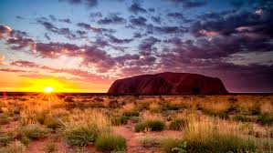

Spot Gorillas in Uganda
ADVENTURES
 It’s very possible to get a smidge of primatologist Jane Goodall’s experience without making gorillas your life’s work. On Abercrombie & Kent’s 5-day Tailor-Made Uganda: Bwindi Impenetrable Forest journey, you’ll pick your adventure pleasure, whether you want to penetrate the lush-beyond-belief Bwindi “Impenetrable” Forest National Park in search of its resident tribes of gorillas, or tour the children’s wing at the local community hospital with A&K Philanthropy. When you see your first gorilla, remember it’s not King Kong: gorillas are typically sweet-tempered, even a bit bashful.
It’s very possible to get a smidge of primatologist Jane Goodall’s experience without making gorillas your life’s work. On Abercrombie & Kent’s 5-day Tailor-Made Uganda: Bwindi Impenetrable Forest journey, you’ll pick your adventure pleasure, whether you want to penetrate the lush-beyond-belief Bwindi “Impenetrable” Forest National Park in search of its resident tribes of gorillas, or tour the children’s wing at the local community hospital with A&K Philanthropy. When you see your first gorilla, remember it’s not King Kong: gorillas are typically sweet-tempered, even a bit bashful.
National Geographic Guided Tour of Antartica
 Experience Antarctica from every perspective using a range of exploration tools aboard the National Geographic Explorer, National Geographic Endurance, or National Geographic Resolution, including a remotely operated vehicle that captures footage of the ocean floor. Explore alongside a team of biologists, geologists, and undersea specialists who offer insights and engaging presentations throughout the trip. Get up close to icebergs, wildlife, and hard-to- reach places using our fleets of kayaks and Zodiacs. Observe a range of penguin and whale species, as well as seals and seabirds, and photograph them alongside our onboard photo instructor and National Geographic photographer.
Experience Antarctica from every perspective using a range of exploration tools aboard the National Geographic Explorer, National Geographic Endurance, or National Geographic Resolution, including a remotely operated vehicle that captures footage of the ocean floor. Explore alongside a team of biologists, geologists, and undersea specialists who offer insights and engaging presentations throughout the trip. Get up close to icebergs, wildlife, and hard-to- reach places using our fleets of kayaks and Zodiacs. Observe a range of penguin and whale species, as well as seals and seabirds, and photograph them alongside our onboard photo instructor and National Geographic photographer.
Explore the Outback
A journey into the Australian outback is one you'll never forget. A staircase to the moon, rock art that comes alive with the help of an Aboriginal ranger, luxury accommodation buried deep underground, and made-by-nature swimming pools are just some of the unbelievable experiences that you'll find only in outback Australia.